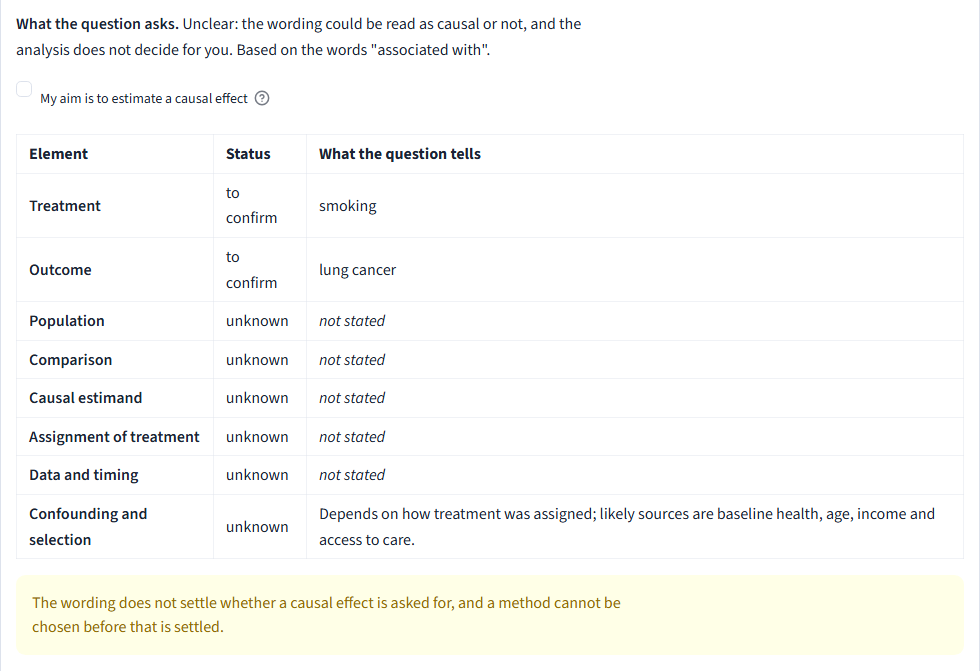
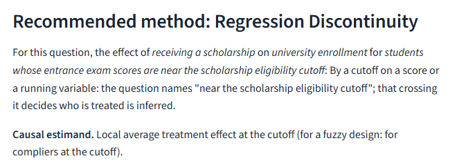

Causal Lab
A lab for choosing a causal method
It reads your question first.
Is
smokingTo confirm
associated withUnclear
lung cancer?To confirm
No method yet.

Real run, 13 Nov 2026
It picks a method only once you confirm.
A causal effect is asked
A cutoff decides who is treated
You confirm the form
Regression discontinuity

Real run, 13 Nov 2026
And shows you where your design breaks.
Test stays quiet858 of 1,000 worlds
In the 858 quiet worldscovers 31.6%misses 68.4%
Source: docs/DEMO_DETAILS.md
Try it.
Causal Lab
esst-prog2.github.io/CAUSAL-LAB-A-Virtual-Laboratory-for-Causal-ResearchThierry Z. Barhame · MSc Statistics and Data Analytics · ELTE